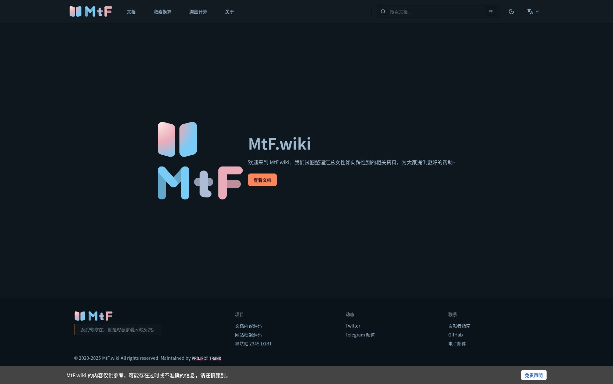

@Beiyan_Yunyi 静态资源似乎全部被放置在了/hugo-static/路由下，文中对部分说明书pdf的超链接并未被解析器自动更改，请问是配置失误还是有意为之？有意放入/hugo-static/路由下的话需要修改原文本以修复超链接。


科技以换皮为本（划去）
在开发人员最近一个半月的不懈努力下，历经数年筹划的 https://t.co/9c7JHcsEec 更新计划今天终于落地。新 wiki 采用 Next.js 配合自定义主题和 markdown 解析器，在几乎不需要修改原文本的情况下实现了迁移，新增搜索功能 https://t.co/n3mSss2oTR https://t.co/W8o4lGMDjI
在开发人员最近一个半月的不懈努力下，历经数年筹划的 https://t.co/9c7JHcsEec 更新计划今天终于落地。新 wiki 采用 Next.js 配合自定义主题和 markdown 解析器，在几乎不需要修改原文本的情况下实现了迁移，新增搜索功能 https://t.co/n3mSss2oTR https://t.co/W8o4lGMDjI